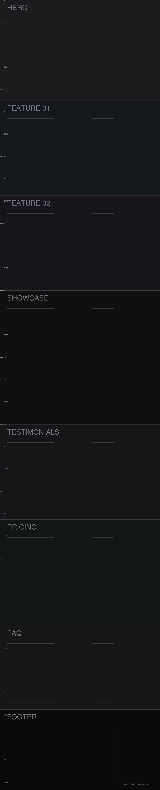

Built for the ~7072px-tall wireframes: how to present something that long inside a case study without either dumping 7000px of raw scroll on the reader, or hiding most of the work. Scroll through each section below and compare how it actually feels, not just how it sounds described. Nothing here touches the site yet — pick one (or none) and tell Claude.
Demo image is a labelled 1440×7072 placeholder, not a real wireframe — swap in yours once you've picked a technique.A fixed-height window pins in place; the tall image pans upward inside it as you scroll, so the whole page is visible without it ever getting taller on screen. Scroll distance still tracks the image's real length fairly closely, so a 7072px source is still a long scroll — just a contained one, in a frame instead of a raw edge-to-edge image.
Scroll distance for the full pan: –

Best for: a single long wireframe you want read start to finish, in order, without cropping any of it out of the story.
Same pinned-window mechanic as A, but the scroll-to-pixel mapping is deliberately sped up: the section only asks for ~1100px of scroll no matter how tall the source image is, so a 7072px page and a 3000px page cost the reader about the same amount of scrolling. This is the one that actually solves "these are all really long."
Scroll distance for the full pan: ~1,100px, regardless of source height
Best for: most of your wireframes, probably — same reading experience as A, a fraction of the scroll. Recommended default.
What "parallax" usually means outside a portfolio context: the image drifts at a slower rate than the page around it, for a layered feel. It is not a way to show more of a long page — only a fixed crop is ever visible (here, the hero band). Worth ruling in or out on its own terms rather than as a long-page solution.
Visible: ~420px of the 7072px source, always — the rest never appears
Best for: a moody hero moment, not for getting through a long wireframe. Probably not the fix for this problem.
The honest baseline: the real image at real length, in the page's normal flow — what every other figure on the site already does. Included so A/B/C are judged against something, not against nothing.
Scroll distance: the full 7072px, same as the page itself
Shown here in a scrollable inset so this lab page itself stays a sane length — on the real site it would just run the page's own full length.